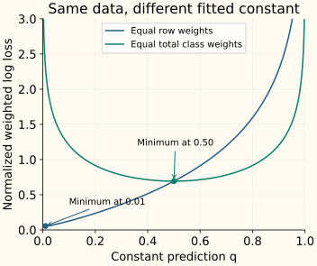

Class Weights
Class weighting changes how much each training example contributes to the loss. A rare-class example can receive more influence without being copied or replaced. The labels and original observations stay the same.
Use the earlier population of 990 negatives and 10 positives. We will calculate balanced weights, inspect their total influence, then show why a weighted classifier’s output is not automatically a probability for the original population.
Multiply each loss before averaging
Suppose example $i$ has label $y_i$ and incurs loss $\ell_i$. The loss measures how poorly the current prediction fits that example. Assign a positive class weight $w_{y_i}$, so every example of the same class receives the same multiplier.
For this chapter, define the weighted objective as the weighted sum of losses divided by the total weight. With $n$ training examples:
A positive example with weight 10 contributes ten times as much as one with weight 1 if their unweighted losses are equal. The actual influence also depends on the prediction error and model. Total class weight alone is not the class’s total loss.
We use this normalization to compare weighted averages. Libraries may normalize their data loss differently or combine it with regularization differently. Multiplying every weight by a common constant leaves the average above unchanged, but it need not leave every library’s regularized fit unchanged at fixed hyperparameters.
What “balanced” weights actually balance
A common heuristic gives every represented class the same total weight. Let $K$ be the number of classes and $n_c$ the number of training examples in class $c$. Without additional sample weights, scikit-learn’s balanced rule is
Multiplying by the class count gives $n_cw_c=n/K$, so every class receives the same total weight. For two classes with counts 990 and 10:
| Class | Count | Weight per example | Total weight |
|---|---|---|---|
| Negative | 990 | 1,000 / (2 × 990) ≈ 0.5051 | 500 |
| Positive | 10 | 1,000 / (2 × 10) = 50 | 500 |
The positive-to-negative weight ratio is 99. It balances total weight, not the number of observations, the number of errors or the information available about each class. A rare positive subtype still has only the examples originally collected.
Change the relative weight and inspect the consequence
The figure below fixes each negative weight at 1 and varies the positive weight. At positive weight 99, both classes have total weight 990. This has the same relative weighting as the balanced rule above for our normalized objective.
Why the fitted number can stop representing prevalence
Imagine a model with no useful features: it must predict the same number $q$ for every case. Under binary log loss, a positive example contributes $-\log q$ and a negative contributes $-\log(1-q)$, using the natural logarithm.
With equal row weights, its best constant is the observed positive fraction, 0.01. After giving both classes equal total weight, its best constant becomes 0.50. The underlying data still contains only 1% positives.

The weighted fit is responding to the training objective we gave it. If downstream decisions need probabilities in the original population, evaluate and, when needed, calibrate those probabilities on appropriate independent data. Merely calling an output predict_proba does not establish that interpretation after reweighting.
Derive the best constant prediction
Write $n_0,n_1$ for the two class counts and $w_0,w_1$ for their weights. The total negative weight is $a=w_0n_0$ and the total positive weight is $b=w_1n_1$. Both are positive. The normalized log loss for a constant $0<q<1$ is
Its derivative is proportional to $a/(1-q)-b/q$. Setting that to zero balances the two terms and gives
The loss is strictly convex on this interval, so this stationary point is its minimum. Substituting equal weights gives 10 / 1,000. Substituting equal total class weights gives 500 / 1,000.
More generally, at a fixed feature value with true positive probability $p$, an unrestricted model minimizing weighted binary log loss prefers $w_1p/[w_0(1-p)+w_1p]$. Finite model capacity and regularization can change the fitted result; the constant example isolates the effect without those complications.
Choose weights by validation, not by the word “balanced”
Balanced weights are a candidate based on class counts. They do not know the cost of a missed positive or a false alarm. Compare them with no weighting and a small set of task-motivated ratios using the evaluation measures you chose.
Compute count-based weights inside each training fold. If an intended class is absent, no weight can supply its missing examples. Check the split and data collection rather than dividing by a zero class count.
For scikit-learn logistic regression, class weights multiply any per-example sample_weight passed to fit. Likewise, sampling and weighting together can compound influence. If balanced weights are recomputed after resampling, they use the resampled class counts; an already balanced resampled dataset gives equal class weights.
Integer row repetition and integer weighting give the same unnormalized sum of per-example losses. They need not produce identical fits across implementations, because normalization, regularization and optimization details can differ. The oversampling chapter focuses on what repeated examples do and do not add.
Threshold moving acts later: it changes the decision from existing scores. Class weighting changes training and may change the scores themselves. Compare the complete fitted system and selected threshold, rather than assuming one method always substitutes for the other.
Python: isolate the constant-prediction effect
All feature values below are zero, so only the intercept can supply a prediction. This deliberately simple model tests the weighting effect; it is not intended as a useful detector.
Compute weights and fit the two constant models
import numpy as np
from sklearn.linear_model import LogisticRegression
from sklearn.utils.class_weight import compute_class_weight
y = np.r_[np.zeros(990, dtype=int), np.ones(10, dtype=int)]
X = np.zeros((len(y), 1))
weights = compute_class_weight("balanced", classes=np.array([0, 1]), y=y)
print(weights.round(4).tolist())
for setting in [None, "balanced"]:
model = LogisticRegression(
class_weight=setting, tol=1e-10, max_iter=1000,
).fit(X, y)
positive_column = list(model.classes_).index(1)
print(f"{model.predict_proba([[0]])[0, positive_column]:.4f}")
[0.5051, 50.0]
0.0100
0.5000For a real model, fit on training data and report performance on independent observations with the intended class distribution. Use model.classes_ to identify the positive probability column explicitly.
C++: apply class weights to per-example log losses
The calculation below uses the same 990/10 labels and a fixed prediction of 0.1 for every row. It reports the ordinary mean log loss and the balanced weighted mean. Predictions strictly between zero and one keep this teaching example’s logarithms finite.
Compile the weighted-loss calculation
#include <array>
#include <cmath>
#include <iomanip>
#include <iostream>
#include <stdexcept>
#include <vector>
std::array<double,2> balanced_weights(const std::vector<int>& y) {
std::array<std::size_t,2> counts{};
for (int label:y) {
if (label!=0 && label!=1) throw std::invalid_argument("binary labels");
++counts[label];
}
if (!counts[0] || !counts[1]) throw std::invalid_argument("both classes required");
return {y.size()/(2.0*counts[0]),y.size()/(2.0*counts[1])};
}
double weighted_loss(const std::vector<int>& y,
const std::vector<double>& q,
const std::array<double,2>& w) {
if (y.empty() || y.size()!=q.size()) throw std::invalid_argument("aligned inputs");
for (double weight:w)
if (!(weight>0) || !std::isfinite(weight)) throw std::invalid_argument("weights");
double total=0,mass=0;
for (std::size_t i=0;i<y.size();++i) {
if ((y[i]!=0 && y[i]!=1) || !(q[i]>0 && q[i]<1))
throw std::invalid_argument("binary label and 0 < q < 1 required");
const double loss=y[i] ? -std::log(q[i]) : -std::log1p(-q[i]);
total+=w[y[i]]*loss; mass+=w[y[i]];
}
if (!std::isfinite(total) || !std::isfinite(mass))
throw std::overflow_error("weighted sums overflow");
return total/mass;
}
int main() {
std::vector<int> y(990,0); y.insert(y.end(),10,1);
std::vector<double> q(y.size(),.1);
std::cout << std::fixed << std::setprecision(4)
<< weighted_loss(y,q,{1,1}) << "\n"
<< weighted_loss(y,q,balanced_weights(y)) << "\n";
}
0.1273
1.2040The higher weighted loss reflects a changed objective that pays more attention to the ten poorly predicted positives. It does not mean the fixed predictions changed between the two lines.
References and further reading
- Scikit-learn: compute_class_weight — the balanced heuristic and its sample-weight extension.
- Scikit-learn: LogisticRegression — class weights, their combination with sample weights and probability outputs.
- Scikit-learn: logistic regression objective — per-example log loss and weighted, regularized fitting.
- Scikit-learn: probability calibration — evaluating probability reliability on suitable independent data.